![Per Scholas logo.]()
UCI 2107.1 · Low Voltage Fiber Technician · Module 528 — Fiber Optics Systems
Lesson 528.2 — Fiber Preparation, Termination, Splicing, and Testing
Prepare, join, inspect, and test fiber using a controlled process and defensible evidence.
Complete this lesson before the related supervised work. Model-specific procedures require the approved equipment manual, Safety Data Sheet, lab specification, and supervision requirements.
Estimated completion time: 60–75 minutes, including the formative activities. Your reading and technology needs may change the time required.
How the lesson is organized
- Work Control and Preparation. Establish the requirement and safe bench.
- Termination. Select, assemble, inspect, and evaluate connector systems.
- Splicing. Choose, perform, protect, and troubleshoot approved splice methods.
- Optical Loss Test Set (OLTS) Testing. Reference correctly and make valid loss decisions.
- Optical Time-Domain Reflectometer (OTDR) Testing. Locate and interpret events within instrument limits.
- Wrapping Up. Review the evidence chain.
How this page works
Use the contents list or Previous and Next. Complete the activity on the visible topic to continue. Wrong answers provide feedback and do not block progress.
Accessibility
Use the skip link to move to the lesson. All controls are keyboard operable, and status changes are announced.
Lesson 528.2 · Section 1 Work Control and Preparation
528.2.1 From work order to controlled bench
- Prepare fiber to the approved joining-system dimensions.
- Terminate fiber connectors using the approved anaerobic-polish procedure.
- Assemble fiber patch cables to the specified polarity and loss limit.
- Perform mechanical and fusion splices within the governing tolerance.
- Install completed splices in trays and enclosures.
- Test fiber links with an optical loss test set and visual fault locator against the approved loss budget.
- Interpret optical time-domain reflectometer traces using controlled settings and complete records.
A reliable result begins before a jacket is opened.
Read the work order and identify the cable, fiber type, connector or splice system, locations, polarity, required test wavelengths, and acceptance source. Compare those requirements with the actual materials. A connector that fits mechanically can still be wrong for the fiber, polish, or application.
Prepare a clean, stable work surface with shard control, eye protection, approved chemicals, waste containers, and the required tools. Verify each tool’s condition and calibration status where applicable. Isolate all possible optical sources and maintain the controlled condition throughout preparation, inspection, and cleaning.
Do not perform a model-specific procedure from this reading alone. The approved kit, manufacturer manual, current Safety Data Sheet (SDS), lab specification, settings, dimensions, cure times, consumables, and acceptance criteria must be available at the bench.
Place the preparation decisions in order.
Lesson 528.2 · Section 1 Work Control and Preparation
528.2.2 Strip, clean, and cleave controls
Preparation dimensions belong to the approved connector, splice, holder, and tool system.
Remove only the jacket, buffer, coating, or strength member called for by the procedure. Use the tool and setting intended for that layer. A damaged cladding surface can fail later even if the fiber survives the immediate operation.
After coating removal, clean the bare fiber with the product and method approved by the equipment manufacturer. Do not touch the prepared glass. With the approved handheld cleaver, cleave to the length and angle required by the connector, mechanical splice, or fusion splicer. Keep the cleaver blade, clamp pads, and fiber seats clean without touching the blade edge.
Inspect the cleave using the approved indirect method or the splicer’s evaluation. Reject chips, lips, cracks, severe angle, contamination, or an incorrect length. Dispose of every offcut immediately in the designated shard container.
A precision-cleaved fiber is prepared before insertion into a mechanical splice or fusion splicer. In many adhesive-and-polish connector systems, the fiber is seated and cured in the ferrule before the protruding glass is scribed or removed and polished. Do not transfer the sequence, strip length, or cleave length from one process to another.
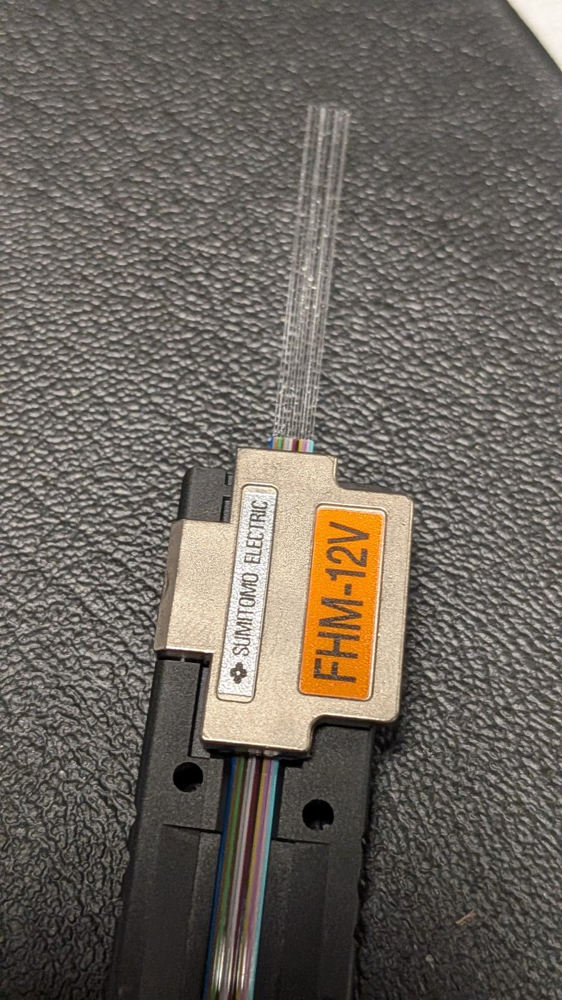
Use note: Use the approved cleaver and inspection criteria; the sketches support diagnosis and do not replace measured acceptance.
Text description of this diagram
Four side views compare cleaves. The acceptable end is flat and square. The other examples show angle, a projecting lip, and hackle. Each defect is paired with a possible preparation or tool cause.
Check Your Understanding
Where should the required cleave length come from?
Lesson 528.2 · Section 1 Work Control and Preparation
528.2.3 Acceptance evidence and traceability
A technician must be able to show what was built, how it was tested, and which limit controlled acceptance.
Record the cable and fiber identification, termination or splice locations, component type, equipment identifiers, test settings, wavelengths, reference method, launch conditions, measured values, acceptance limit, disposition, technician, and date. Preserve native instrument files when the work package requires them.
A design allowance is the amount of loss assigned to a component or cable segment when the total acceptable link loss is calculated. It is a ceiling used in the budget, not the loss a technician should try to create. For example, if an exercise assigns 0.75 decibels (dB) to one mated connector pair, a 0.30 dB contribution uses less of the available budget; the technician does not add loss to reach 0.75 dB.
A workmanship target is a tighter value an organization may use to identify consistently high-quality installation or to trigger review before the formal limit is exceeded. It becomes a pass/fail requirement only when the governing project or lab specification says so. The complete link is accepted by applying the documented budget to a valid end-to-end measurement—not by assuming that every individual component equals its allowance.
If the governing specification is missing or conflicts with the work order, record the conflict and stop the acceptance decision.
The checks on this page are formative and unrecorded. They do not constitute hands-on qualification, a graded lab, or an official assessment.
Check Your Understanding
A measured loss is below a value used in a practice calculation. What else is needed before the link can be accepted?
Lesson 528.2 · Section 2 Termination
528.2.4 Connector selection and process control
Select the termination system before preparing the fiber.
Confirm the connector family, ferrule size, polish, fiber type, buffer size, cable retention method, adapter, and mating interface. Then confirm that the approved kit supports the exact combination. Subscriber Connector (SC), Straight Tip (ST), and Lucent Connector (LC) describe connector families; they do not by themselves establish fiber type or end-face geometry.
Field terminations may use adhesive-and-polish, pre-polished mechanical, splice-on, or other manufacturer-defined systems. Each has different tooling, preparation, assembly, inspection, and acceptance requirements. Do not combine steps from different systems.
| Decision | Evidence required | Common error |
|---|---|---|
| Compatibility | Cable, connector, adapter, and equipment datasheets | Choosing by shape alone |
| Preparation | Approved kit manual and lab specification | Reusing dimensions from another connector |
| Chemical use | Current label and Safety Data Sheet | Assuming every adhesive cures the same way |
| Acceptance | Inspection and optical test requirement | Treating visual appearance as proof of performance |
Check Your Understanding
Two connectors have the same SC body. What must still be verified?
Lesson 528.2 · Section 2 Termination
528.2.5 Adhesive, seating, curing, and polishing
The approved termination system controls every dimension and chemical step.
For an adhesive-and-polish connector, prepare the adhesive exactly as the manufacturer specifies. Some systems use an activator or primer; some mix components; some cure with heat or time. Anaerobic chemistry can involve oxygen exclusion, but that phrase alone does not establish the cure mechanism or time for a particular product.
Apply only the specified amount, prevent contamination of the ferrule and mating surfaces, insert the prepared fiber without forcing it, and seat the cable or buffer to the required position. Maintain the fiber without stress while the adhesive cures. Follow the current Safety Data Sheet (SDS) for ventilation, protective equipment, ignition control, first aid, and disposal.
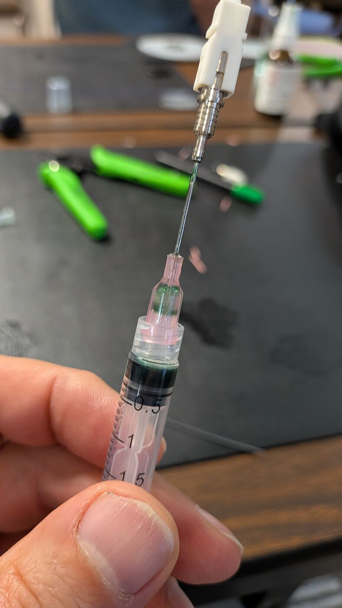
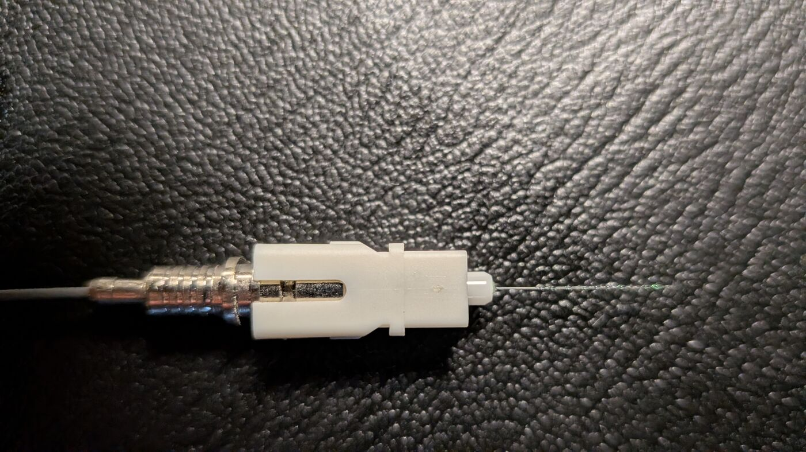
After the approved cure, remove protruding fiber only by the specified method. Polish with the correct puck and the manufacturer-defined film sequence, normally moving from material-removal stages toward finer finishing stages. Use a clean area of the correct film, the specified stroke pattern and pressure, and the stated endpoint. Clean and inspect between stages so debris from a coarser film does not contaminate the next stage.
Film color is not a universal grit code. Do not substitute film, skip a stage, reuse a contaminated area, or continue polishing after the specified endpoint. Excess pressure, a tilted or incorrect puck, contaminated film, or excessive polishing can change the end-face geometry or damage the fiber.
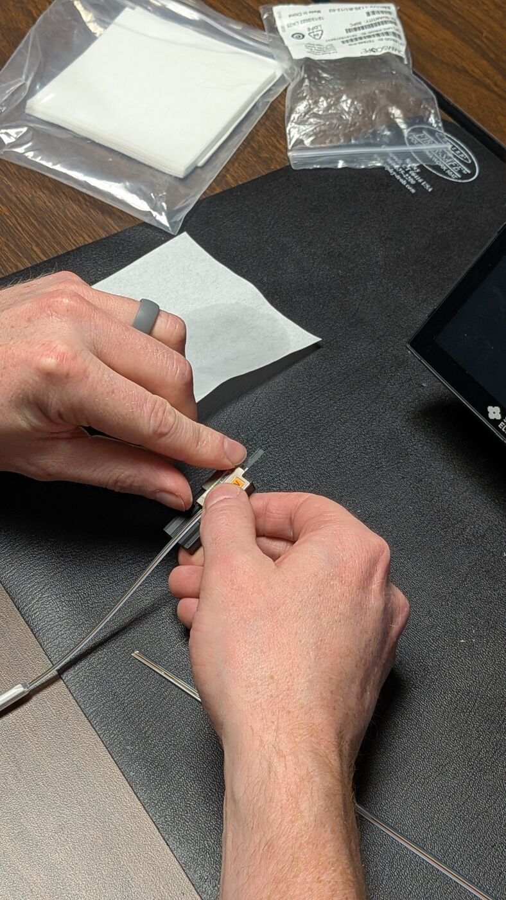
Do not use a cure time, activator sequence, or polish schedule until the exact product and kit are specified and the procedure is verified against the manufacturer manual and SDS.
Check Your Understanding
Why is “anaerobic adhesive cures when air is excluded” insufficient as a work instruction?
Lesson 528.2 · Section 2 Termination
528.2.6 Assemble, test, troubleshoot, and disposition the patch cable
A finished connector is only one part of an identified, polarized, and tested patch cable.
Control the optical source and use a video inspection probe with the correct tip. Inspect for removable contamination and classify visible features using the approved current criteria. Clean with the approved method and inspect again before mating.
Do not infer attenuation from appearance. A connector can look acceptable and still have high loss, or show a visible feature while meeting the specified optical performance. Apply the current International Electrotechnical Commission (IEC) inspection model and the project’s optical acceptance criteria without converting one into the other.
Complete both ends using the required connector family, fiber type, polish, boots, crimp or retention components, and label. Preserve the specified simplex or duplex polarity. Before optical-loss testing, verify identification and continuity using the approved method so crossed fibers, an open path, or the wrong endpoint is not mistaken for excessive attenuation.
Inspect both end faces, establish the required Optical Loss Test Set (OLTS) reference, and test at the specified wavelengths and directions. Compare the valid result with the documented patch-cable limit. Record the cable identifier, endpoint orientation, equipment and settings, measured loss, limit, and disposition.
If the cable fails, troubleshoot in a controlled order: confirm identity and polarity; inspect and clean both ends and the test interfaces; verify the reference and compatible test cords; check bends and strain relief; and isolate which end or component is responsible. Rework a field termination only when the approved connector system permits it and sufficient cable remains. Otherwise replace the affected connector or cable and repeat the complete inspection and test.
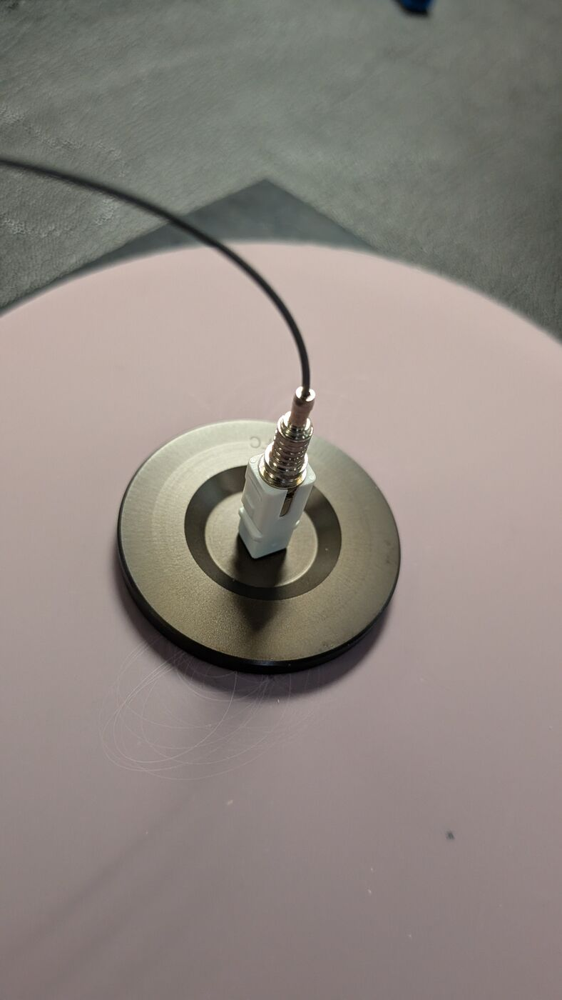
Check Your Understanding
A connector looks clean under a video probe. What does that prove?
Lesson 528.2 · Section 3 Splicing
528.2.7 Selecting a splice method
Choose the method from performance, environment, serviceability, and approved resources.
A mechanical splice aligns prepared fibers in a fixture and may use index-matching material. A fusion splice uses a controlled electric arc to join prepared glass. Fusion splices commonly provide low loss and low reflectance; mechanical splices can support restoration or applications where their performance and lifecycle are acceptable.
Use note: The construction is illustrative; the selected splice kit instructions control preparation, insertion, and locking.
Text description of this diagram
A cutaway shows two prepared fibers entering a mechanical splice. A precision alignment element centers the cladding. Index-matching material occupies the optical junction. A cam or crimp feature locks the fibers in place.
Compare allowed insertion loss and reflectance, available cable slack, enclosure and tray space, environmental conditions, repair strategy, equipment, consumables, technician qualification, schedule, and cost. Use the project specification rather than a universal claim that one method is always correct.
Before using an approved 3M Fibrlok mechanical-splice system, confirm the exact splice model, supported fiber and coating size, assembly tool, cleave-length gauge, holders, cleaning materials, and current manufacturer instructions. A manufacturer or product-family name alone does not establish the preparation dimensions or tool sequence.
Begin by identifying and routing the correct fibers and placing any required protection or organizer components. Strip and clean each fiber to the specified dimensions, then make and inspect both precision cleaves. Insert each end to the required stop or alignment indication and activate the splice with the approved tool. Finally, verify retention and optical performance.
Never pull on bare glass to “check” a splice unless the manufacturer procedure explicitly provides a proof-test action.
After testing, secure the mechanical splice in its intended holder and route the slack under the same bend, identification, and enclosure controls used for fusion splices. A mechanically complete splice is not accepted until its loss is within the governing limit and its record identifies the fibers and location.
Check Your Understanding
When may a mechanical splice be selected?
Lesson 528.2 · Section 3 Splicing
528.2.8 Fusion-splicer setup and splice cycle
Clean preparation and correct equipment setup matter more than a memorized button sequence.
Verify the splicer, holders, electrodes, fiber program, protection sleeves, power source, and calibration or maintenance state. The selected program must match the fiber being joined. Clean V-grooves, clamps, mirrors or cameras, and holders only by the manufacturer-approved method.
A cladding-alignment splicer positions the outside surfaces of the fibers and depends on consistent cladding geometry, clean V-grooves or holders, correct cleave length, and clean end faces. A core-alignment splicer uses imaging and positioning controls intended to align the light-carrying cores more directly. The machine’s image may show core position, but that does not convert a cladding-alignment unit into a core-alignment splicer. Confirm the exact Fitel Ninja model and its operating manual before selecting holders, programs, maintenance actions, or arc settings.
Before cleaving, place the protection sleeve on one fiber when the process requires it. Strip, clean, and cleave each fiber; then load it without touching the end face. The splicer images and aligns the fibers, performs the controlled arc, and estimates loss. Review the displayed geometry and result before accepting the splice.
Keep the fusion area free of flammable vapors, control every glass shard, and keep hands away from the electrodes and sleeve heater. Do not open the wind protector, touch the electrodes, or remove a heated sleeve until the equipment indicates that the applicable cycle is complete. Follow the exact manual for battery, electrode, arc, heater, and maintenance hazards.
An estimated loss is not a link-acceptance measurement. It is calculated from the splicer’s imaging and process data. Perform the required Optical Loss Test Set (OLTS) testing and, where specified, Optical Time-Domain Reflectometer (OTDR) testing after the splice is protected and routed.
A successful fusion splice forms a nearly continuous glass path with no separate mating interface, so it normally produces little reflection. Contamination, poor cleaves, bubbles, an incorrect program, or incompatible fibers can still create loss or reflection. The displayed splice image and estimate must therefore be checked against the required independent test evidence.
Use note: The sequence is conceptual; follow the exact splicer, holder, electrode, program, and fiber instructions.
Text description of this diagram
Three panels show a conceptual fusion-splice cycle. First, the machine aligns two prepared ends. Next, an arc softens the glass. Finally, controlled motion joins the ends into one continuous fiber.
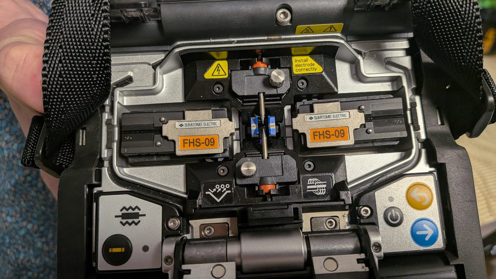
Place the generic fusion-splice sequence in order.
Lesson 528.2 · Section 3 Splicing
528.2.9 Protecting and routing the completed splice
A low-loss splice can still fail if it is strained, bent, or poorly protected.
After the splice cycle, apply only the proof-test action provided by the approved splicer procedure. Center the protection sleeve over the joint and use the correct heater program. Allow it to cool in the designated holder before routing it.
Route the protected splice in the tray without crossing retention features, pinching fiber, exceeding the product minimum bend radius, or forcing the sleeve into a holder. Store slack in smooth paths and preserve fiber identification. Use ties or retainers only as approved for the tray; never tighten a tie against bare or buffered fiber.
Before closing the enclosure, account for all shards and tools, inspect routing, verify strain relief and bonding requirements, and record the tray, position, fiber, and splice disposition.
When the design uses preterminated pigtails, the splice joins each cable fiber to the matching pigtail, and the connectorized end is routed to the assigned adapter. Where loose fibers require added protection, use the approved fan-out or breakout components before routing them to connectors. Preserve the fiber order, color identification, polarity, and label relationship from the incoming cable through the splice and adapter.
Seat every sleeve fully in the assigned holder, keep fibers in their documented order, and verify that no fiber is trapped under a cover, hinge, fastener, gasket, or tray edge. Confirm unused fibers are protected and serviceable. Close the tray and rack-mount, wall-mount, or outdoor enclosure using the manufacturer’s hardware, seal, torque, cable-entry, and environmental instructions.
Use note: Apply the enclosure manufacturer’s routing, sleeve-holder, slack, and bend-radius requirements.
Text description of this diagram
A plan view compares two routes through a splice tray. The acceptable route follows smooth perimeter curves and uses the intended holders. The unacceptable route crosses the tray and creates tight turns and interference risks.
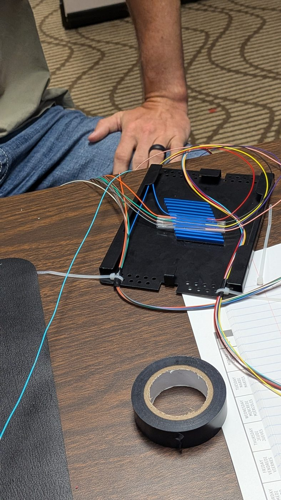
Check Your Understanding
Why must the splice sleeve cool before final routing?
Lesson 528.2 · Section 3 Splicing
528.2.10 Splice troubleshooting by evidence
Use the symptom, a confirming observation or test, and the approved corrective action.
An Optical Loss Test Set (OLTS) evaluates end-to-end insertion loss. An Optical Time-Domain Reflectometer (OTDR) can provide event-level evidence when the setup resolves the splice. A fusion splicer’s estimated loss is process feedback; it does not replace either required field test.
| Symptom | Likely cause | Confirming evidence | Corrective action |
|---|---|---|---|
| Poor cleave or fiber-angle warning | Dirty cleaver, worn blade position, poor stripping, or incorrect seating | Inspect tool, fiber position, and cleave image | Clean or service the tool, prepare a new end, and repeat. |
| Bubble, line, or abnormal joint image | Contamination, incorrect program, damaged end, or unstable arc | Review preparation and splicer diagnostics | Reprepare both ends and correct the program or maintenance issue. |
| High estimated loss | Misalignment, incompatible fiber, contamination, or poor cleave | Check fiber identity and displayed geometry | Correct the cause and resplice; verify independently. |
| Good estimate but failed OLTS | Connector, reference, bend, or another link event | Segment the diagnostic process and inspect each interface | Correct the confirmed link fault rather than resplicing automatically. |
| OTDR gainer at the splice | Different backscatter coefficients across the event | Test from both directions and compare fiber records | Use bidirectional analysis when the specification requires it. |
A gainer is an apparent negative loss caused by a backscatter difference. It can occur across different fiber types, manufacturing lots, mode-field diameters, or other optical-property differences. It is not evidence that a passive splice created optical power.
Check Your Understanding
An OTDR shows a gainer at a splice. What is the best next action?
Lesson 528.2 · Section 4 OLTS Testing
528.2.11 What an OLTS measures
An optical loss test set measures end-to-end insertion loss under a defined reference and launch condition.
An Optical Loss Test Set (OLTS) uses a stabilized source and power meter. For acceptance testing, the source wavelength, fiber type, connector interfaces, test cords, reference method, launch condition, and instrument calibration must support the link and governing test method.
Use decibels referenced to one milliwatt (dBm) for absolute power readings and decibels (dB) for loss. A measured insertion loss is the difference between the stored reference power and the received power through the link. Preserve the sign convention used by the instrument and report a positive loss value where required.
The source launches a known, stabilized signal; the meter receives and measures it. The pair may be separate instruments or a bidirectional set. For a quad-wavelength light-source-and-power-meter system, verify which wavelengths are supported for multimode and single-mode testing and select the pair required by the test plan. Do not assume that AUTO mode, a displayed wavelength, or a connector adapter proves the correct source is active.
The planned Jonard FPL-5555 kit contains an FLS-55 light source and an FPM-55 power meter. Manufacturer documentation identifies 850 and 1300 nanometers for multimode measurements and 1310 and 1550 nanometers for single-mode measurements. Confirm the actual kit contents, adapters, manuals, calibration state, and approved procedure at the bench before establishing a reference.
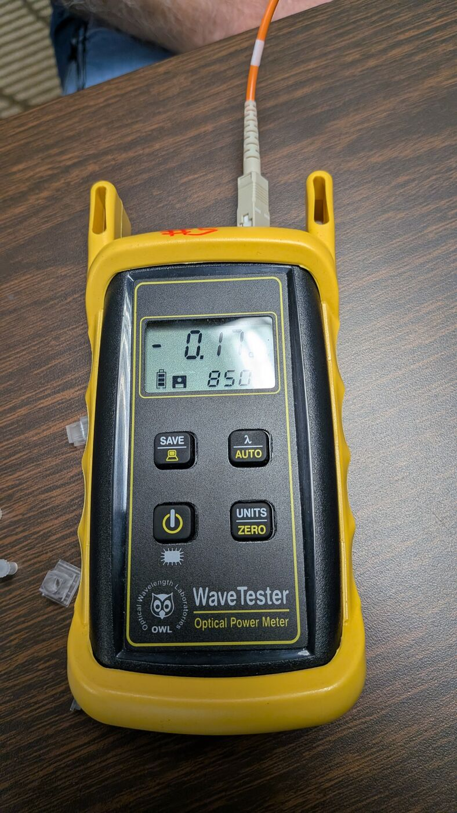
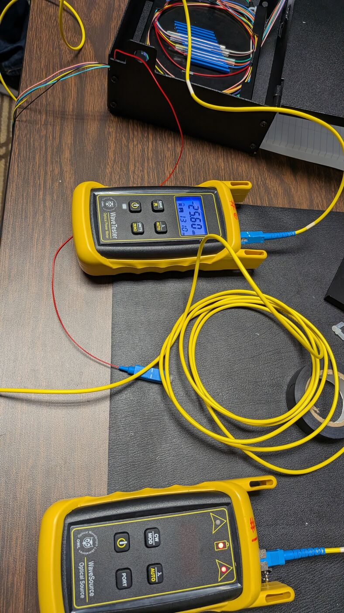
Tier 1 testing commonly includes length, polarity, and insertion loss. It is the primary acceptance method for many premises specifications. An OTDR trace can supplement Tier 1 when the project requires event-level evidence; it does not automatically replace OLTS acceptance.
Check Your Understanding
Which quantity should an end-to-end insertion-loss result normally report?
Lesson 528.2 · Section 4 OLTS Testing
528.2.12 Reference methods and launch control
The reference method determines what remains inside the measurement.
For installed multimode cabling, use American National Standards Institute/Telecommunications Industry Association (ANSI/TIA) 526-14-C or the institution-approved current successor. Refer to one-cord, two-cord, and three-cord reference methods as the primary terms. Historical Method A/B/C labels can vary by document and should appear only in a clearly identified crosswalk—not as the operative instruction.
Select the method required by the governing specification and supported by the link interfaces. Establish the reference with clean, inspected, verified test cords and adapters. After referencing, do not disconnect the source-side cord unless the approved procedure calls for it. A disturbed connection can invalidate the reference.
Multimode measurements require a controlled launch. Use encircled-flux compliant equipment where required. A mandrel wrap can filter higher-order modes in some approved setups, but it is not a substitute for the specified launch condition and must match the fiber and test procedure.
Use this controlled measurement sequence:
- Inspect and clean every interface.
- Connect the specified test cords and adapters.
- Establish the required reference.
- Verify the reference without disturbing the source-side connection.
- Connect the link and measure each required wavelength and direction.
- Compare each valid result with its limit and save the complete record.
If a reference cord is disconnected or the verification is outside tolerance, stop and establish a new valid reference before testing the link.
Do not claim that one reference method is universally mandatory. Cite the governing specification, licensed current method, and exact interface conditions.
Check Your Understanding
Why should a test record name the reference setup as “one-cord,” “two-cord,” or “three-cord” instead of recording only a letter?
Lesson 528.2 · Section 4 OLTS Testing
528.2.13 Loss budgets and pass/fail decisions
Calculate with the approved allowances, then compare a valid measurement with the correct limit.
A simple design budget may add fiber attenuation, connector-pair allowances, splice allowances, and an explicitly approved margin. Use the project values, wavelengths, measured or documented length, and counting rules. State whether a connector allowance applies to a mated pair or an individual plug.
At 850 nanometers (nm), suppose the exercise allows 3.0 decibels per kilometer (dB/km) for 0.20 kilometers (km) of fiber, 0.75 decibels (dB) for each of two mated connector pairs, and 0.30 dB for one splice.
Budget = (3.0 × 0.20) + (0.75 × 2) + (0.30 × 1) = 2.40 dB.
A 1.10 dB result is below this exercise allowance. The test is accepted only if the reference, launch, wavelength, interfaces, and controlling specification are also valid.
When bidirectional testing is required, record each direction. Do not average the two directions for pass/fail unless the governing specification explicitly defines that calculation. Averaging is particularly relevant to evaluating some OTDR events, but it is not a universal permission to hide a failing OLTS direction.
Check Your Understanding
A specification requires bidirectional optical-loss testing, and one direction exceeds its limit. May the directions be averaged to create a pass?
Lesson 528.2 · Section 4 OLTS Testing
528.2.14 Diagnosing an OLTS failure and using a visual fault locator
Verify the measurement system before disturbing the installed link, then choose a locating method that fits the fault.
First confirm the correct job, fiber, wavelength, limit, reference method, and launch condition. Inspect and clean the source, meter, test cords, adapters, and link interfaces. Check whether the source-side reference connection moved and whether the test cords match the installed fiber core size and type.
If the measurement system is valid, compare directions and wavelengths. Localized bend loss can be more pronounced at a longer wavelength, but wavelength behavior alone does not identify every fault. Use a Visual Fault Locator (VFL) only within its safety, reach, and visibility limits. Use an Optical Time-Domain Reflectometer (OTDR) when quantitative event location is needed and the project or diagnostic plan supports it.
A VFL injects visible red light into a controlled fiber. Continuous light can support continuity checking; a flashing mode can help distinguish the selected fiber where the light is visible at the far end. Side glow may identify a nearby break, severe bend, damaged connector, or poor splice, but opaque cable construction, distance, ambient light, and enclosure design can hide the light. A VFL is not a quantitative loss meter and a visible result does not establish OLTS acceptance.
Before connection, confirm the fiber is not carrying service, inspect and clean the VFL interface and test connector, and verify that the VFL power and connector adapter are approved for the task. Never view the VFL output or a connected fiber end. Observe escaping light only from the side and follow the site’s optical-safety procedure.
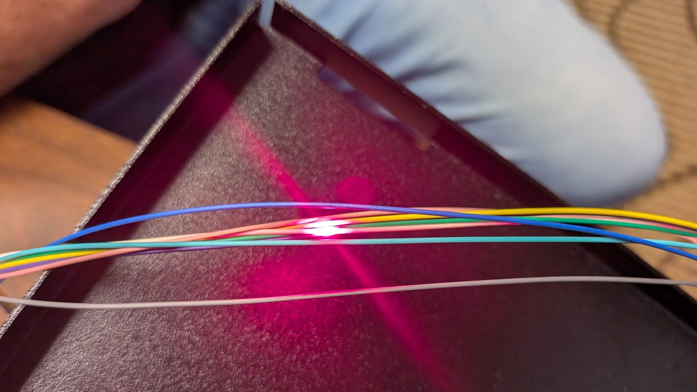
Change one controlled variable at a time and record the result. Randomly remating connections can erase evidence, transfer contamination, or introduce a second fault.
Place the initial diagnostic steps in order.
Lesson 528.2 · Section 5 OTDR Testing
528.2.15 Reading an OTDR trace
An OTDR estimates event distance and loss from returned light; the setup controls what it can resolve.
An Optical Time-Domain Reflectometer (OTDR) sends pulses and measures Rayleigh backscatter and Fresnel reflections over time. The trace plots returned level against distance. An event table is software interpretation, not unquestionable ground truth. Review the trace, settings, and known link layout.
Reflective events can include connector interfaces, mechanical splices, cracks, or open ends. A fusion splice or bend is often nonreflective. A break may appear reflective or nonreflective depending on the physical end. Ghosts are repeated artifacts associated with strong reflections and instrument range behavior.
Pulse width affects reach, signal level, resolution, and dead zones. Averaging reduces noise but increases test time. Range and index settings affect displayed distance. Test at the required wavelengths with settings appropriate to the link.
The planned equipment includes an OWL WTO2-S13 and a Jonard OTDR-1500. Manufacturer specifications identify the WTO2-S13 as a 1310-nanometer single-mode model and the OTDR-1500 as a 1310/1550-nanometer instrument for G.652 single-mode fiber. A supervised live-trace activity therefore needs a compatible single-mode link, or a different approved OTDR that supports the fiber being tested. Treat the model identifiers as resource controls, not operating procedures. Confirm the actual unit, current manual, launch and receive cords, connector interfaces, calibration state, and approved settings before use.
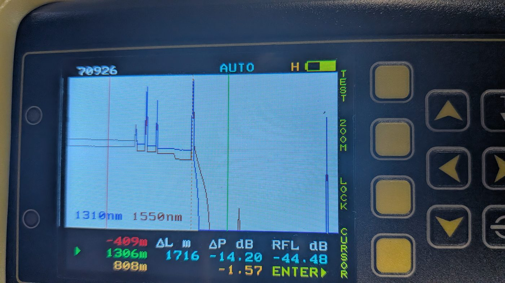
Text description of the conceptual trace
The horizontal axis represents distance and the vertical axis represents returned optical level. After the launch response, the backscatter line slopes downward. A nonreflective splice appears as a step without a reflection peak. A bend appears as another nonreflective step. A connector produces a reflection peak followed by loss. The far end appears where the trace falls toward the noise floor. Actual shapes depend on the link, instrument, and settings.
Check Your Understanding
Why should an event-table label be checked against the trace and link layout?
Lesson 528.2 · Section 5 OTDR Testing
528.2.16 Dead zones, launch cords, and bidirectional analysis
Make both end connections visible and qualify conclusions with the actual instrument setup.
A strong reflective event can temporarily prevent an Optical Time-Domain Reflectometer (OTDR) from resolving nearby events. Event dead zone concerns separating closely spaced events; attenuation dead zone concerns measuring loss accurately after a reflection. Exact values depend on the OTDR model, wavelength, pulse width, event reflectance, and setup.
A launch cord places the near-end connector beyond the initial dead zone. A receive cord supports evaluation of the far-end connector. Both must match the fiber type and test method, meet length requirements for the selected settings, and be inspected before use.
Do not declare that a short link “defeats an OTDR” from length alone. The conclusion is unsupported without the OTDR model, wavelength, pulse width, launch and receive cords, event reflectance, and stated dead-zone specifications. A short link may be difficult for some settings and measurable with others.
Opposite-direction traces help evaluate directional backscatter effects, including gainers. When required, calculate event loss using the governing bidirectional method and retain both source traces.
Use note: The drawing is conceptual; required cord length and settings come from the instrument, link, and approved test plan.
Text description of this diagram
The upper trace omits test cords, so the near and far connector events merge with large end events. The lower trace adds launch and receive cords. When their lengths and the instrument settings are suitable, they can separate the link-end connectors for evaluation.
Check Your Understanding
A short link’s two connectors appear merged on one trace. Which conclusion is defensible?
Lesson 528.2 · Section 5 OTDR Testing
528.2.17 Choosing evidence and documenting the result
Use the instrument that answers the question, then preserve enough context for another technician to reproduce the conclusion.
An Optical Loss Test Set (OLTS), Optical Time-Domain Reflectometer (OTDR), Visual Fault Locator (VFL), and video inspection probe answer different questions. Select the evidence source that matches the required decision.
| Question | Primary evidence | Limit |
|---|---|---|
| Does the complete link meet insertion-loss requirements? | Valid OLTS result against the approved budget | Does not locate each event. |
| Where is an event and how does the trace behave? | OTDR trace with controlled settings and cords | Does not automatically replace Tier 1 acceptance. |
| Is visible red light escaping at a nearby discontinuity? | Approved VFL under optical-safety controls | Limited reach and not a quantitative loss test. |
| Is the connector end face contaminated? | Video inspection using current criteria | Does not prove link attenuation or polarity. |
Record the instrument manufacturer and model, serial or asset ID, calibration status, test date, operator, fiber and direction, wavelength, pulse width, range, averaging, index setting, launch and receive cords, file name, event dispositions, and governing limit. Exporting a screenshot without settings is not a complete test record.
Escalate results that conflict across instruments rather than choosing the most favorable number. Resolve reference, direction, launch, component, and configuration differences first.
Check Your Understanding
Which record best supports an OTDR conclusion?
Lesson 528.2 · Section 6 Wrapping Up
528.2.18 What you covered
Carry these controls into supervised termination, splicing, and testing.
- Begin with the work order, approved equipment, current manuals, Safety Data Sheet (SDS), and acceptance source.
- Use model-specific preparation dimensions, settings, cure times, and consumables.
- Distinguish splicer estimates, visual inspection, Optical Loss Test Set (OLTS) acceptance, and Optical Time-Domain Reflectometer (OTDR) diagnostics.
- Use current descriptive OLTS reference-method names and control the multimode launch.
- Use a Visual Fault Locator (VFL) for controlled continuity and nearby fault-location checks, not quantitative loss acceptance.
- Record each required direction and do not invent a pass/fail average.
- Qualify OTDR conclusions with the actual instrument, settings, cords, and link conditions.
These checks are formative and unrecorded. Completion does not establish hands-on competence or authorize independent work. Practical readiness requires supervised performance against an approved procedure and rubric.